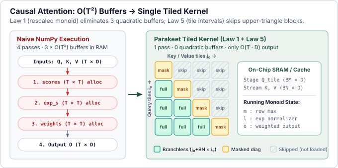
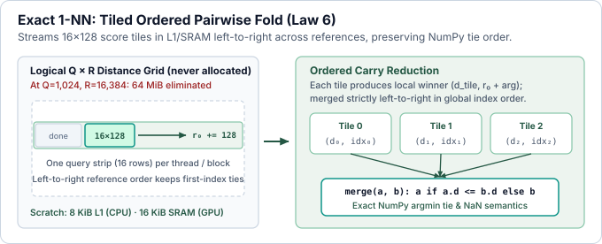

Algebraic laws¶
Simple loop fusion eliminates element-wise temporaries, but harder bottlenecks
remain whenever a program normalizes across a whole row (O(N²) attention or
O(M · V) cross-entropy), chains matrix contractions, runs a long serial
recurrence (O(T) depth), or saves a giant tape for reverse-mode AD.
Instead of hardcoding model-specific "fused layers", Parakeet encodes these optimizations as six general algebraic laws over its index-space primitives. Because the passes match operator algebra rather than neural-network layer names, the exact same passes optimize Gaussian kernel regression, exact 1-NN, GBDT histograms, and IIR filters alongside attention, cross-entropy, and state-space models.
Semantic contract: real algebra vs. exact order¶
- Associative / commutative rewrites (parallel reductions, monoidal tiling, contraction reassociation, chunkwise scans, privatized scatter-add) assume real-arithmetic associativity: floating-point rounding may differ in the last ULP relative to a left-to-right loop, just like NumPy's pairwise summation or cuBLAS.
- Order-sensitive operations (first-index ties and NaNs in
argmin/argmax, non-commutativepar.foldmerges, arbitrary user folds) preserve exact left-to-right merge order.
The six laws at a glance¶
| Law | Core idea | Compiler pass | Workloads |
|---|---|---|---|
| 1. Rescaled semiring monoids | Associative rescaling state (m, l, o) |
monoidal tiling |
Softmax attention, Split-K decode, linear cross-entropy, RBF regression, 1-pass logsumexp |
| 2. Algebraic AD rematerialization | Recompute score tiles from sufficient statistics | algebraic_vjp |
Attention backward, cross-entropy backward, 1-pass LayerNorm / RMSNorm VJP |
| 3. Bilinear contraction reassociation | Reorder (U @ Vᵀ) @ Wᵀ + share KV head tiles |
contraction reassociation |
Multi-head latent attention (MLA), grouped-query attention (GQA), low-rank chains |
| 4. Chunkwise state-space duality | Block-parallel affine / bilinear composition | chunkwise scan |
Parallel IIR / EMA / Kalman filters, Mamba-2 & gated linear attention |
| 5. Affine tile-interval pruning | Propagate [i₀, i₀+Bₘ-1] × [j₀, j₀+Bₙ-1] bounds |
TileInterval |
Causal & sliding-window masks, banded matrices, spatial cutoffs |
| 6. Privatized scatter & ordered carries | Thread-private histograms & tiled ordered folds | IndexScatter, pairwise fold tiling |
GBDT tree splits, exact 1-NN, multi-channel BAM pileup, par.fold |
Law 1: Rescaled semiring monoids¶
The problem. Softmax attention, linear cross-entropy, and Gaussian kernel
regression all normalize by a row-wide max and sum(exp(...)) before taking a
weighted sum—naively requiring O(N · M) or O(M · V) buffers.
The law. Maintaining the running maximum m, normalizing sum l, and
unnormalized output o forms an associative monoid (S, ⊕, e):
(m₁, l₁, o₁) ⊕ (m₂, l₂, o₂) = (
m,
l₁ · exp(m₁ − m) + l₂ · exp(m₂ − m),
o₁ · exp(m₁ − m) + o₂ · exp(m₂ − m)
)
Because ⊕ is associative, tiles can be reduced in cache or GPU shared memory
and merged in any grouping without materializing the full score matrix:

Where it fires:
- Tiled softmax attention (
flash_monoid): streamsK, Vtiles againstQwith zeroS/Pallocation. - Split-K decoding (
split_k=True): when query count is tiny (decode) andT_kvis long, splitsT_kvacross GPU threadblocks and merges partial(mₚ, lₚ, oₚ)summaries with⊕. - Tiled linear cross-entropy (
monoid_lse): tilesH @ Wover vocabularyVwith the scalar(m, l)monoid, eliminating theM × Vlogit tensor. - Gaussian / RBF kernel regression (
score_op="sqdist"): fuses-γ · ‖xᵢ − yⱼ‖²into the sameO(N + M)streaming kernel.
Law 2: Algebraic rematerialization in reverse-mode AD¶
The problem. A naive reverse-mode tape saves every forward intermediate,
bringing back O(T²) memory for attention and O(M · V) memory for linear
cross-entropy.
The law. Before loop lowering, parakeet/transforms/algebraic_vjp.py
substitutes sufficient-statistic adjoints that save only compact O(T · D)
tensors and recompute score tiles on-chip during backpropagation:

Where it fires:
- Attention backward (
flash_monoid_bwd): saves(Q, K, V, O, lse), computesDᵢ = ∑_d dO[i, d] · O[i, d], and recomputesP = exp(S − lse)anddS = P · (dO @ Vᵀ − D)tile-by-tile (also composes with forward-over-reversepar.hvp). - Linear cross-entropy backward (
cce_bwd): saves(H, W, targets, lse)and recomputesp[i, v] = exp(hᵢ · wᵥ − lseᵢ)on-chip. - LayerNorm / RMSNorm & softmax VJPs: collapses multi-pass backward graphs
into one pass (
dS = P · (dP − ∑ P · dP), dropping themaxadjoint).
Law 3: Bilinear contraction reassociation & shared-KV tiling¶
The problem. Chaining two bilinear contractions ((X @ A) @ B, or latent
attention K = C_kv @ W_uk, V = C_kv @ W_uv, O = softmax(Q @ Kᵀ) @ V) can
cost orders of magnitude more FLOPs and memory in the wrong parenthesization.
The law. For a single-use intermediate T = U @ Vᵀ feeding Y = W @ T:
parakeet/transforms/reassociate.py emits a runtime shape-guarded branch so
short-query decode runs tiled Law 1 attention directly over the compressed
latent C_kv, while long-query prefill automatically takes the lower-FLOP
expanded branch.
Shared-KV head-group tiling (GQA): when a head-group axis G of Q
broadcasts against a single KV head, Parakeet folds G into the query row
(i_eff = g * T_q + i) so all G query heads share one SRAM load of K and
V.
Law 4: Chunkwise state-space duality¶
The problem. Plain Python recurrences (for t in range(T): s = a[t] * s + b[t])
have O(T) serial depth and leave multi-core CPUs and GPUs idle.
The law. Affine maps compose associatively,
(a₂, b₂) ∘ (a₁, b₁) = (a₂ · a₁, a₂ · b₁ + b₂).
parakeet/transforms/tile_scan.py partitions time into chunks of C = 64 and
rewrites both scalar affine loops (EMA, IIR, Kalman) and bilinear matrix-state
loops (Mamba-2 / gated linear attention) into a division-free parallel scan:

Because chunkwise scan runs before tiling, the matrix products in Steps 1,
2, and 4 flow directly into CPU register tiling, Metal simdgroup_matrix, and
CUDA TF32 WMMA Tensor Cores.
Law 5: Affine tile-interval mask pruning¶
The problem. Causal masks (j <= i), sliding windows (i - j <= W), and
banded matrices evaluate millions of entries that are immediately discarded.
The law. TileInterval (parakeet/transforms/analysis.py) propagates
coordinate intervals [i₀, i₀ + Bₘ − 1] × [j₀, j₀ + Bₙ − 1] through affine
index predicates to classify every tile statically:
| Tile condition | Example (causal j <= i) |
Action emitted |
|---|---|---|
| Always false | j₀ > i₀ + Bₘ − 1 |
Skip tile before loading K or V |
| Always true | j₀ + Bₙ − 1 ≤ i₀ |
Branchless inner loop (mask check removed) |
| Boundary / mixed | i₀ − Bₙ < j₀ ≤ i₀ + Bₘ − 1 |
Evaluate per-element mask |
Sliding-window masks ((j <= i) & (i - j <= W)) automatically drop from
O(N²) to O(N · W) work. For runtime boolean mask arrays, GPU threadblocks
cooperatively check whether any entry in the tile is true and skip empty tiles
before loading values.
Law 6: Privatized scatter & ordered multi-state carries¶
Two patterns dominate outside dense linear algebra: accumulating into shared
bins (np.bincount, par.scatter_add) and folding structured state (argmin,
Welford variance, par.fold).
- Keyed histogram fusion: sibling
IndexScatterstatements sharing an index array (e.g. GBDT gradient/Hessian histograms or 6-channel BAM pileups) merge into one traversal, lowered with thread-private bins on CPU and parallel atomics on GPU. - Ordered pairwise tile folds:
Fold.carriestracks multiple scalar fields in one pass while preserving chunk order.pairwise fold tilingfuses a pairwise score producer directly into an ordered fold over L1 / shared-memory tiles, eliminatingO(Q · R)distance matrices in both broadcasting NumPy and nested-map 1-NN:

Next: Rewrite rules catalog lists every fusion, tiling, and differentiation rule and compares Parakeet 1.x with the 2013–2014 theses. See also the Kernel gallery for runnable examples across all six laws.